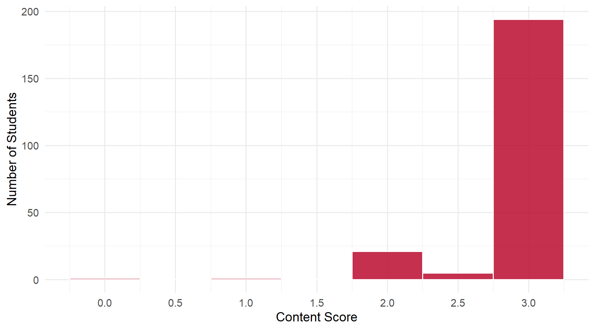
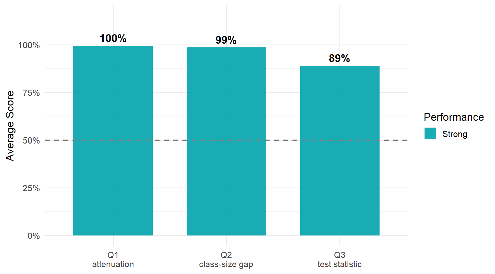

2 Daily 09 — Sep 17
2.1 Class Performance
Students: 222 | Content mean: 2.87 / 3 | Median: 3 | SD: 0.38 | Mean daily score: 9.91 / 10
Content scores ranged from 0 to 3 out of 3. (Your daily score adds the 8-point attendance credit for submitting; each question is worth 0.667 of the remaining 2 points.)
Two of these three questions were answered almost universally correctly. The third carried nearly all the credit lost on the daily, and its most common error is worth naming precisely, because it is not a mistake about statistics — it is a mix-up between three things that belong to the same test.
2.2 Score Distribution
2.3 Performance by Question

ImportantThe pattern worth taking from this daily
A hypothesis test has three separate pieces, and Q3’s most common wrong answer supplied the first where the second was asked for.
- The null hypothesis says what is being tested: \(E(Y \mid D = 1) - E(Y \mid D = 0) = 0\) — small and regular classes produce the same average score.
- The test statistic says how far the data sit from that claim: the difference in the two sample means, divided by the standard error of that difference.
- The decision rule says what to conclude: compare \(|t|\) with a critical value such as 1.96.
The single largest error on Q3 wrote the null and stopped. That statement is correct, and it shows the student knew exactly what was being tested — but nothing is divided by anything, so it is not a statistic.
Many correct answers went the other way and appended the decision rule (“< 1.96”) after a complete formula. That costs nothing. But the pattern across both is the same: the three pieces are being stored as one object. Keeping them apart is most of what this question was asking.
2.4 Questions
2.4.1 Q1: Classical measurement error in X biases the correlation between X and Y ___.
TipCorrect Answer
Downward, or equivalently toward zero — the estimate is attenuated. Noise in X that is unrelated to Y adds variation the relationship cannot explain, so the measured correlation shrinks toward zero.
WarningCommon Errors
This was the strongest question of the term so far, and there were essentially no conceptual errors. Nobody in the class claimed the bias runs upward or away from zero, and nobody treated it as omitted-variable bias.
Two things are worth a sentence anyway:
- “Negatively” or “negative” as the whole answer. It names a direction, and it is the direction the estimate moves when the true correlation is positive. But attenuation is about magnitude: the estimate shrinks toward zero. If the true correlation were negative, attenuation would move the estimate up, toward zero, not further down. “Toward zero” is right in both cases; “negative” is right in only one.
- Restating the whole sentence in the box instead of supplying the missing word. The direction was still there, so it cost nothing — but a blank wants the word that fills it.
Spelling of “attenuated” varied widely and cost nothing.
2.4.2 Q2: The difference in average kindergarten test scores between small and regular classes is about ___ points.
TipCorrect Answer
About 14 points. The unrounded difference of the two means shown in class is 13.9, so “14”, “13.9” and “13.9 ≈ 14” are all the same correct answer.
WarningCommon Errors
Also near-universally correct — the class subtracted the two displayed means reliably, and many students visibly crossed out a first attempt and wrote the right value beside it.
The few misses were of two kinds:
- A unit or category word instead of a number. The blank asks how large the gap is, not what kind of quantity it is.
- A percent sign on an otherwise correct 13.9. The gap is measured in test-score points, not percent. Nobody answered in standard-deviation units, which is the other unit this quantity is often reported in.
- A value far outside the range, which comes from misreading one of the two means rather than from subtracting wrongly.
2.4.3 Q3: Write the test statistic for the null that there is no difference between class types.
TipCorrect Answer
\[t \;=\; \frac{\hat\mu_{\text{small}} - \hat\mu_{\text{regular}} - 0}{\text{se}\!\left(\hat\mu_{\text{small}} - \hat\mu_{\text{regular}}\right)}\]
The “− 0” is optional, and the two means may go in either order — that only flips the sign. The standard error may be written out as \(\sqrt{s^2_{\text{small}}/N_{\text{small}} + s^2_{\text{regular}}/N_{\text{regular}}}\).
WarningCommon Errors
- Writing the null hypothesis instead of the statistic. The largest single error on the daily. See the callout above.
- A denominator that is not the standard error of the difference. Several shapes appeared: a lone standard deviation or \(\sigma\); the square root of the difference in means, which is not a standard error of anything; and an abandoned symbol. In these the numerator was usually right — the student knew to divide the difference by something, but not by what.
- Subtracting the two standard errors — \(\text{se}_{\text{small}} - \text{se}_{\text{regular}}\). Standard errors never combine by subtraction. See below.
- Two separate square roots added together, rather than one square root taken over the summed terms.
- A critical value standing in for the statistic — writing only a comparison with 1.96, with no formula for the quantity being compared.
- The difference in means with no denominator at all, sometimes set equal to zero — which collapses back into writing the null.
- A blank, or “t =” with nothing after it. A noticeable group with correct Q1 and Q2 answers left this empty: the formula, not the idea, was what they did not have at recall.
ImportantWorth Your Attention
Every denominator error on Q3 comes back to one rule: variances add, and the square root is taken once, at the end.
For two independent group means,
\[\text{var}\!\left(\hat\mu_1 - \hat\mu_2\right) = \frac{s_1^2}{N_1} + \frac{s_2^2}{N_2}, \qquad\text{so}\qquad \text{se}\!\left(\hat\mu_1 - \hat\mu_2\right) = \sqrt{\frac{s_1^2}{N_1} + \frac{s_2^2}{N_2}}.\]
Read against that, each wrong denominator is a specific slip. Adding the two standard errors, \(\text{se}_1 + \text{se}_2\), square-roots each term before adding instead of after, which overstates the spread. Subtracting them is not a smaller version of the same mistake — it has no interpretation at all, and with equal groups it would give zero. Two separate radicals added together is the same error as adding the standard errors, written differently.
One square root, taken around the sum. That single picture prevents all of them.
2.5 What the Class Did Well
Attenuation is secure. Not one student in the class put the bias in the wrong direction, and many added a magnitude gloss — “down, in magnitude”, “toward zero” — that shows the idea landed rather than the phrase.
The arithmetic was done, not recalled. On Q2, crossed-out first attempts and “13.9 ≈ 14” working show the subtraction being carried out on the sheet.
Writing the derivation helped. Many of the strongest Q3 answers were laid out as a chain — the generic form first, then the small-versus-regular version, or the compact standard error beside its written-out expansion. That habit predicted a correct answer more reliably than anything else on the page.
2.6 What to Review
- Keep the null, the statistic and the decision rule apart. One says what is tested, one measures the distance, one says what to conclude.
- The standard error of a difference. Add the variances, then take one square root. Never add or subtract the standard errors themselves.
- Attenuation means toward zero, not merely “negative” — the distinction matters as soon as the true relationship is negative.
- Points, not percent. The class-size gap is measured in test-score points.
- If you abbreviate the standard error, say what it is the standard error of. Writing a bare “se” leaves the most important part of the denominator unstated.
NoteHow this was graded
Every paper was scored twice, independently, against the same published rubric, by graders who could not see each other’s scores or your name. The two passes agreed on more than 99% of all scores; the single disagreement was reviewed a third time against the rubric and settled with a written reason. Submitting the daily earns 8 of 10 regardless of content.